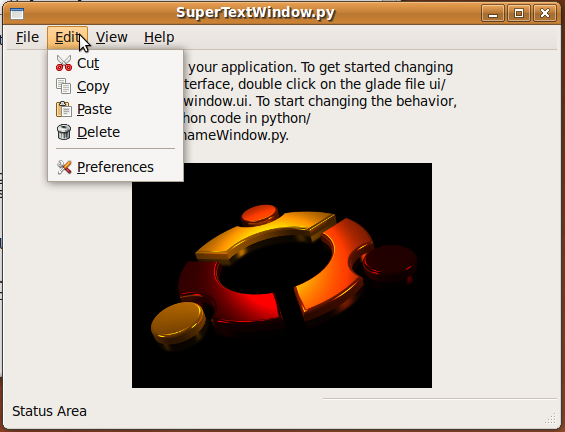
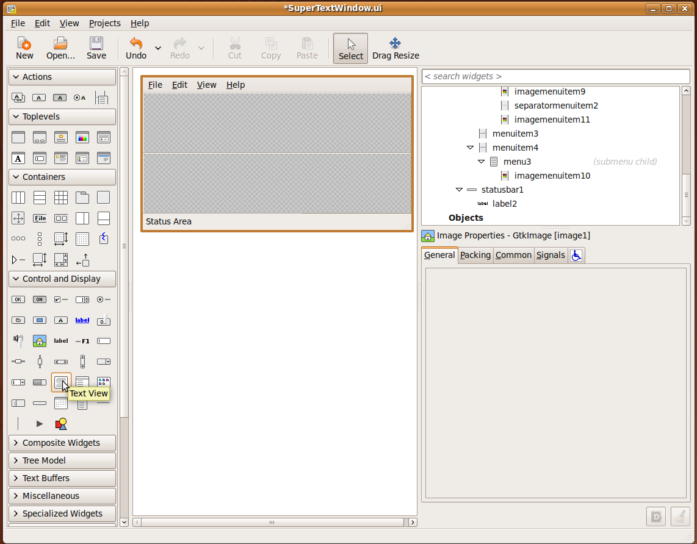
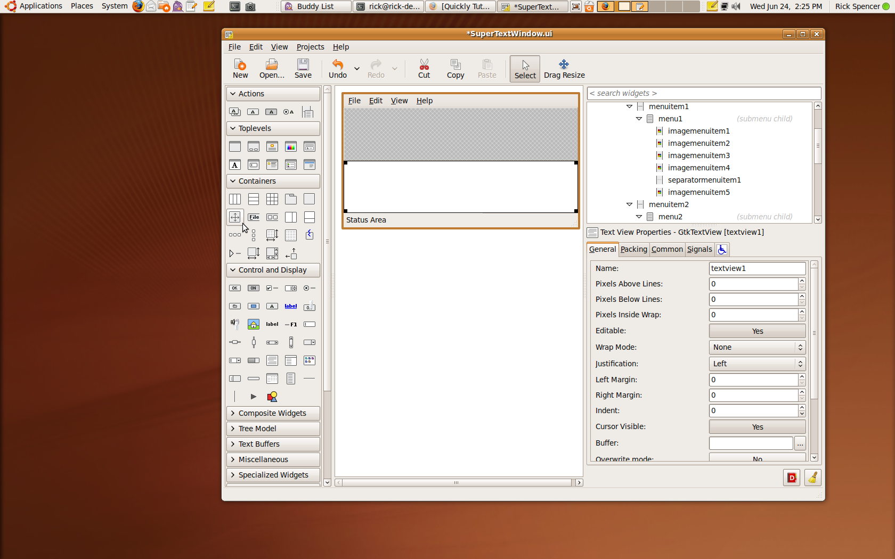
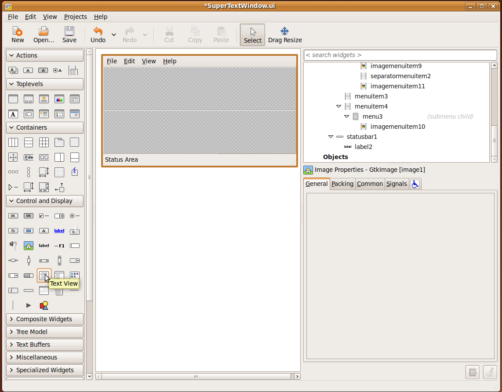
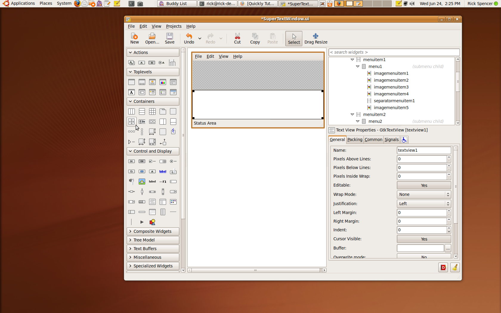
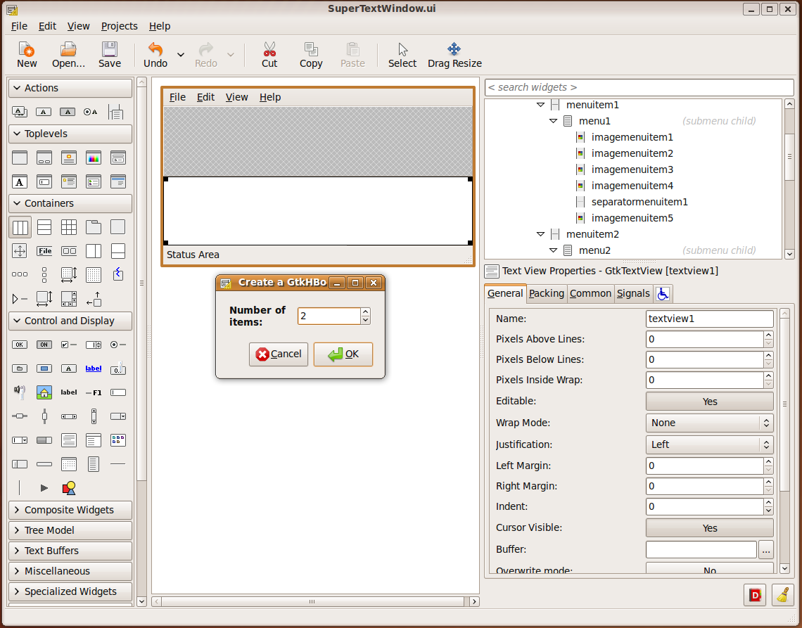

Introduction to Part 1
This part 1 of th Quickly tutorial. This part is will introduce some key quickly commands, editing a user interface in Glade, and editing code in Gedit. This part of the tutorial will familiarize you with these three tools, and how they work together with python and pygtk so that you can quickly build applications.
Other Parts
making a package
releasing
adding a toolbar
adding a dialogbox or window
creating and reusing a custom widget
saving user preferences
quickly reference
Creating a Quickly Project
Creating the Empty Project
Creating an empty but working program couldn't be simpler. First, open a terminal window to type commands into. When it's open, type the command:
$quickly new ubuntu-project super_text
 This will create a super_text sub directory containing a complete directory tree and files for an empty python appliction. The command finishes by running the newly created empty application.
This will create a super_text sub directory containing a complete directory tree and files for an empty python appliction. The command finishes by running the newly created empty application.

Testing the Empty Application
The are populated and set up, and you can resize the window. Notice that quickly interfered that the application title is "Super Text". Only a few of menu items do anything in the empty application, Help->About, Edit->Preferences, and File->Quit.

Running the Application
Close the application by closing the window or using the Quit command. Since the empty application isn't installed into Ubuntu yet, you can't start the application from the application menu yet. To start the applicaton, use the terminal to first cd into the new subdirectory, and then issue the command to start the program.
$cd super_text
super_text$./super_text

Editing an Application
Edit the User Interface in Glade
Quickly programs use Glade to edit the user interface. Start Glade with quickly in order to set up Glade for editing the empty applicaton. Don't start glade directly, or it won't load the necessary catalogue files for editing the classes that were automaticaly generated by quickly.
super_text$quickly glade
 Glade will open with the project loaded up and ready to edit.
Glade will open with the project loaded up and ready to edit.
 Use the Project Menu to choose "SuperTextWindow.ui" for editing.
Use the Project Menu to choose "SuperTextWindow.ui" for editing.
 We want to create a text area for typing into. There are some default Widgets added to the Window. We won't need these so we'll start with deleting them. Click on the label, and press delete, and it will disappear from the window.
We want to create a text area for typing into. There are some default Widgets added to the Window. We won't need these so we'll start with deleting them. Click on the label, and press delete, and it will disappear from the window.

 Do the same with the image widget.
Do the same with the image widget.
 This leave us two free slots.

We'll use the bottom slot to add a TextView widget for the user to type into. In the toolbox, click on the TextView widget. Then click in the empty slot.

Make sure you save the file in Glade, or your changes won't take! Then run the application from terminal again. The window now has a place where the user can type.
This leave us two free slots.

We'll use the bottom slot to add a TextView widget for the user to type into. In the toolbox, click on the TextView widget. Then click in the empty slot.

Make sure you save the file in Glade, or your changes won't take! Then run the application from terminal again. The window now has a place where the user can type.

Add the Save, Open, and New Features
After the user types something, they may want to save it. A File->Save menu item was automatically created in the empty was created, but it's not hooked up to any code. To make Save work, we need tell the menu item what function to call, and then create a funtion to actually do the saving.
Set the Signal Handler in Glade
To tell the menu item what function to call, open up the window in glade:
super_text$quickly glade
Click on the file menu, and the menu opens as if the application were running.
Choose the Save menu item, and it will be selected in Glade.

Then choose the "Signals" tab of the properties window.
In pygtk, menu items are "activated" when a user chooses the item from the menu. Since we want a function to run when the user chooses Save, we want to specify a function to respond to the activate signal from the menu item. We'll call the function "save_file". Simply type the function name into the box for the activate signal. Make sure to save the glade file.

Edit the Code in Gedit
Create the Save File Signal Handler
Of course, this won't make the file actually save, because we haven't created the "save_file" function yet. So it's time to write a little code.
The code for SuperTextWindow is stored in the file SuperTextWindow.py.
Notice the relationship, SuperTextWindow.ui and SuperTextWindow.py. These two files always work tog.ether to make your program work. The .ui file stores the presentation of the window, while the .py file stores the behavior.
Use the quickly edit command to start editing your code files:
super_text$quickly edit
This will open the default Ubuntu text editor "Gedit" with any python files in the python directory. In this case, just SuperTextWindow.py and about.py.
 SuperTextWindow.ui is now expecting to find a function SuperTextWindow.save_file(), so we simply add one to the SuperTextWindow class:
SuperTextWindow.ui is now expecting to find a function SuperTextWindow.save_file(), so we simply add one to the SuperTextWindow class:
def save_file(self, widget, data=None):
print "save"
This will print the word "save" to the terminal when run. The method signature is the standard signature expected in a signal handler. If you are new to python, be sure to copy the indentations exactly, as the indentation level is very important in python.
 Save the file, and run it again:
Save the file, and run it again:
$cd super_text
super_text$./super_text
Choose "File->Save" from the menu, and you'll see the word "save" printing out interminal. That's all there is to hookig up the functions!
Implementing Save
Now we'll write a little code in the signal handler to actually save the file. The code will do the following:
- Open the standard save dialog box from Ubuntu to get the file location.
- Check if the user chose "Save" or "Cancel".
- Get the filepath from the Save Dialog
- Retrieve the text from the TextView
- Write the file to disk at the specified location.
Here's the code to create the file dialog:
pygtk has a file dialog that can be used for selecting files and folders for operations like saving and opening files. We need to do a little setup to configure it for saving a file, like setting the title, and creating a set of buttons that include associated responses. The stock Cancel/Save butons and stock Cancel/Ok responses work well for this.
#Create the save file dialog
title = "Choose a File Location"
buttons=(gtk.STOCK_CANCEL, gtk.RESPONSE_CANCEL, gtk.STOCK_SAVE, gtk.RESPONSE_OK)
chooser = gtk.FileChooserDialog(title=title, parent=self, buttons=buttons,action=gtk.FILE_CHOOSER_ACTION_SAVE)
Here's the code to run the dialog, check if the user chose Save or Cancel, and get the path the user chose:
In pygtk, dialogs have a "run" function which displays the dialog. When the function returns, you should check the result to decide how to proceed. You also need to destroy the dilalog, or it won't get out of the user's way! Since we associated gtk.RESPONSE_OK with the Save button, we'll only set a file_path if the user chose Save. If file_path is set to nothing, then we'll just return from the function without doing anything else.
#run the dialog and get the path name
file_path = None
if chooser.run() == gtk.RESPONSE_OK:
file_path = chooser.get_filename()
chooser.destroy()
#if there's no file_path, we're done
if file_path == None:
return
Here's the code to get pull the text out of the TextView:
In pygtk, TextView widgets have a text buffer that stores the text. So you ask the TextView for it's TextBuffer, and then you ask the TextBuffer for the text. You use iters to determine from which part of the text buffer you want text. Since we want all the text, it's easy to just get the start and end iters.
#get the string
buff = self.builder.get_object("textview1").get_buffer()
start_iter = buff.get_start_iter()
end_iter = buff.get_end_iter()
text = buff.get_text(start_iter,end_iter)
Here's the code to write the file:
Writing text files in Python is easy. You just use the "open" function, telling it what file to open, and the mode, in this case 'w' for "write". If the specified file does not exist, Python will simply create it for. Write the text and close the file.
#save the file
f = open(file_path,'w')
f.write(text)
f.flush()
f.close()
So the whole function should look like this:
def save_file(self, widget, data=None):
#Create the save file dialog
title = "Choose a File Location"
buttons=(gtk.STOCK_CANCEL, gtk.RESPONSE_CANCEL, gtk.STOCK_SAVE, gtk.RESPONSE_OK)
chooser = gtk.FileChooserDialog(title="Save File", parent=self, buttons=buttons,action=gtk.FILE_CHOOSER_ACTION_SAVE)
#run the dialog and get the path name
file_path = None
if chooser.run() == gtk.RESPONSE_OK:
file_path = chooser.get_filename()
chooser.destroy()
#if there's no file_path, we're done
if file_path == None:
return
#get the string
buff = self.builder.get_object("textview1").get_buffer()
start_iter = buff.get_start_iter()
end_iter = buff.get_end_iter()
text = buff.get_text(start_iter,end_iter)
#save the file
f = open(file_path,'w')
f.write(text)
f.flush()
f.close()
Implementing Open and New
Implementing Open is essentially the reverse of Save:
Follow these steps:
- Open the standard open dialog box from Ubuntu to get the file location.
- Check if the user chose "Open" or "Cancel".
- Get the filepath from the Open Dialog.
- Retrieve the text from the file.
- Put the text from the file into the TextView.
So the open_file function looks like so:
def open_file(self, widget, data=None):
#Create the open file dialog
title = "Choose a File To Open"
buttons=(gtk.STOCK_CANCEL, gtk.RESPONSE_CANCEL, gtk.STOCK_OPEN, gtk.RESPONSE_OK)
chooser = gtk.FileChooserDialog(title=title, parent=self, buttons=buttons,action=gtk.FILE_CHOOSER_ACTION_SAVE)
#run the dialog and get the path name
file_path = None
if chooser.run() == gtk.RESPONSE_OK:
file_path = chooser.get_filename()
chooser.destroy()
#if there's no file_path, we're done
if file_path == None:
return
#read int he file the file
f = open(file_path,'r')
text = f.read()
#set the buffer to display the string
buff = self.builder.get_object("textview1").get_buffer()
buff.set_text(text)
To implement New, we'll just clear out the text, like this:
def new_file(self, widget, data = None):
buff = self.builder.get_object("textview1").get_buffer()
buff.set_text("")
To make them work, add these functions to the SuperTextWindow class, and save. Then go back and connect the functions to the activate signals for the Open and New menu items.